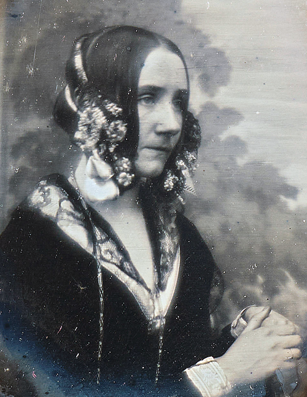

Ada Lovelace (1815 – 1852) est une mathématicienne britannique, fille du poète Lord Byron. Passionnée de sciences, elle travaille aux côtés de Charles Babbage sur sa machine analytique, un ancêtre de l'ordinateur. Elle y décrit ce que l'on considère aujourd'hui comme le premier programme informatique, et imagine déjà que ces machines pourraient manipuler autre chose que des nombres, comme de la musique ou des symboles. Cette vision lui vaut d'être reconnue comme la première programmeuse de l'histoire.
La frise chronologique
- 1815 – 1832 Jeunesse
- 1833 – 1841 Formation
- 1842 – 1843 Machine analytique et algorithme
- 1844 – 1852 Fin de vie